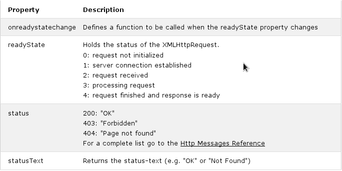

The readyState property holds the status of the XMLHttpRequest.
The onreadystatechange property defines a function to be executed when the readyState changes.
The status property and the statusText property holds the status of the XMLHttpRequest object.
The onreadystatechange function is called every time the readyState changes.
When readyState is 4 and status is 200, the response is ready.
The onreadystatechange event is triggered four times (1-4), one time for each change in the readyState.
A callback function is a function passed as a parameter to another function.
If you have more than one AJAX task in a website, you should create one function for executing the XMLHttpRequest object, and one callback function for each AJAX task.
The function call should contain the URL and what function to call when the response is ready.
The responseText property returns the server response as a JavaScript string, and you can use it accordingly:
document.getElementById("demo").innerHTML = xhttp.responseText;
The XML HttpRequest object has an in-built XML parser.
The responseXML property returns the server response as an XML DOM object.
Using this property you can parse the response as an XML DOM object:
The getAllResponseHeaders() method returns all header information from the server response.
The getAllResponseHeaders() function returns all the header information of a resource, like length, server-type, content-type, last-modified, etc:
The getResponseHeader() method returns specific header information from the server response.
The getResponseHeader() function is used to return specific header information from a resource, like length, server-type, content-type, last-modified, etc:
Last modified: